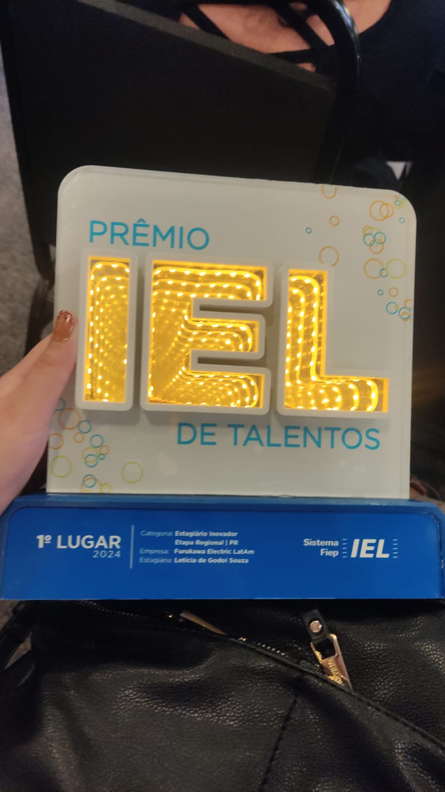
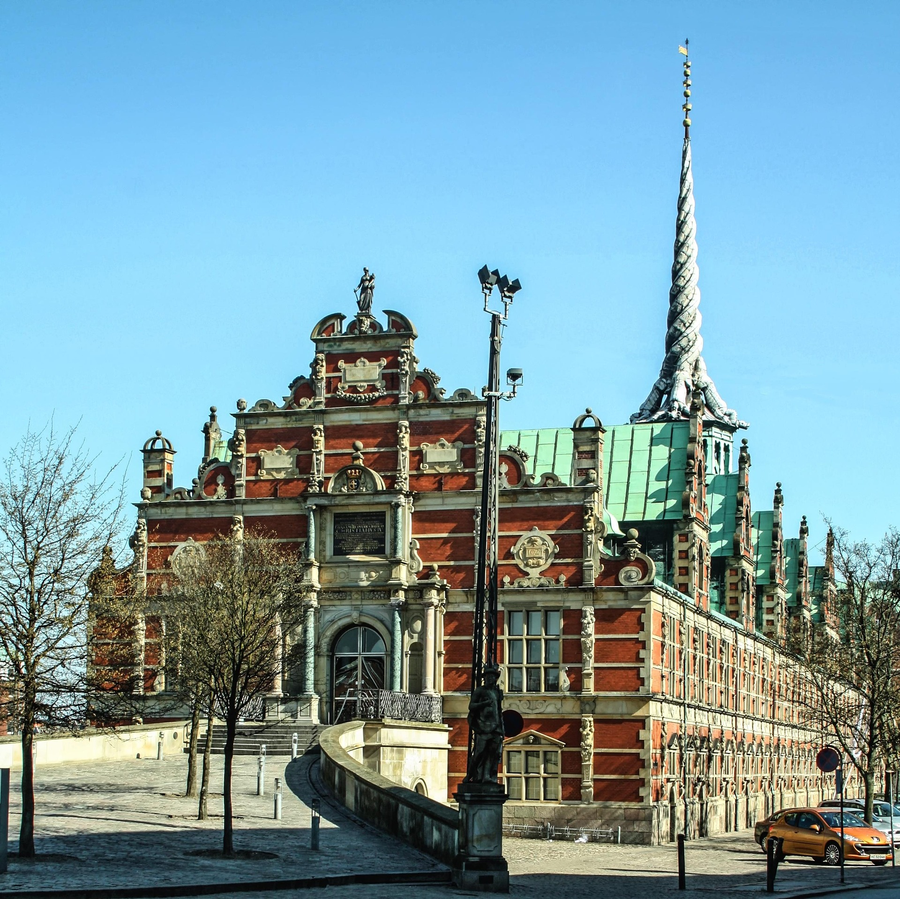

Gestão e representação sindical dialogam sobre demandas dos servidores
Encontros realizados em agosto abordaram temas relacionados ao PGD, prioridades legais, readaptação e banco de horas.
Cerca de 1.200 participantes disputan onze modalides até sábado (29). A programação inclui Festival Paralímpico.
Há 17 horasConheça todos os eventos - atividades, festivais, congressos, palestras e outros - que englobam os campi do IFRN em diferentes escalas de alcance social.
Encontros realizados em agosto abordaram temas relacionados ao PGD, prioridades legais, readaptação e banco de horas.
Atividades acontecem nesta sexta-feira (28) e sábado (29), no Centro de Tecnologia e Cultura do IFRN
Resultados de sexta-feira e sábado encerraram a fase final estadual
Programação reunee integrantes para discutir o regimento interno e aprofundar conhecimentos sobre processos relacionados à carreira docente.
Educação, Ciência, Cultura e Tecnologia em todo o Rio Grande do Norte


>>>>>> origin/atividade-6 alt="Prêmio" class="w-full h-48 object-cover" >Cerca de 1.200 participantes disputam onze modalides até sábado (29). A programação inclui Festival Paralímpico.
Há 17 horasInstituição conquistou o 1º lugar em Educação Inovadora - Nível Técnico e o 2º lugar em Educação Inovadora - Nível Superior.
Há 19 horasEdital têm três vagas de mestrado e uma de doutorado para estudantes que ingressaram em programas de pós-graduação em 2026.
Há 2 dias, 1 hora
Seleção é destinada a estudantes de licenciatura e prevê intercâmbio internacional em Córdoba, na Argentina.
Há 3 dias, 11 horasProgramação reúne integrantes para discutir o regimento interno e aprofundar conhecimentos sobre processos relacionados à carreira docente.
Programação ocorreu entre os dias 26 e 28 de agosto, no Campus Santa Cruz
Quinta-feira reúne estreia da modalidade e rodadas que encaminham as semifinais da fase final
O evento promoveu formação, troca de experiências e discussões sobre a regulamentação e o acompanhamento dos Projetos de Ensino no Instituto.
Segundo dia da fase final teve provas individuais, disputas coletivas e continuidade das rodadas classificatórias